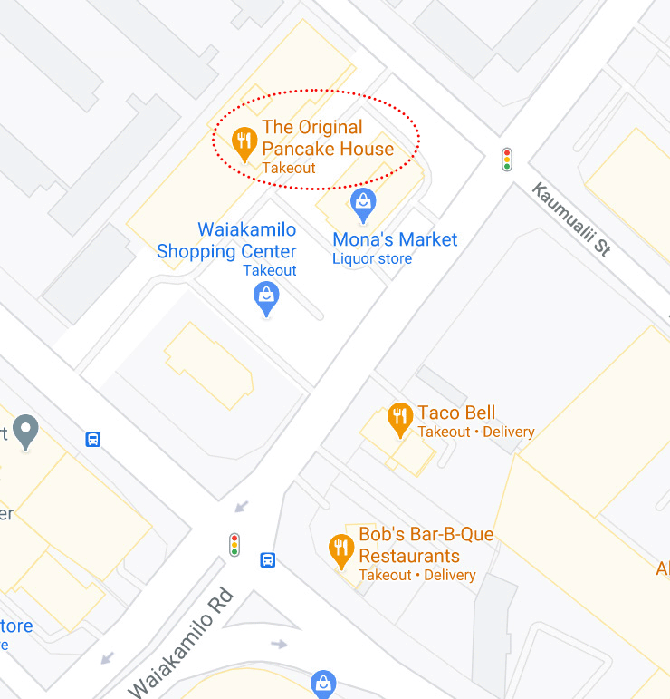

In 1953, Les Highet and Erma Hueneke founded The Original Pancake House in Portland, Oregon. Their restaurant has won worldwide acclaim and was chosen by James Beard as one of the ten best restaurant in America. The Original Pancake House also won the McCall Citation in 1956 for excellence in food preparation and presentation. All receipes are authentic, collected from the best of the each country or area of origin. The Sucess of The Original Pancake House is based on quality, authentic receipes and preparationof all mixed by hand - no prepared mixes use here - and only fresh ingredients. Les and Erma also include natural enzymes in their batters transform food to energy and aid in digestion to reduce the flatulence one experiences from eating other pancakes. Another important ingredient comes from sourdough barrel. This is what makes those pancakes light and finely texture. Our sourdough barrel is just like those used by prospectors of the Old West who were so famous for their sourdough flap jacks. To the satisfaction of Original Pancake House customers everywhere, our menu has become a landmark — unparalled for quality.

Honolulu Location
1414 Dillingham Blvd
Honolulu, HI 96817
(808)847-1496
Daily Hours:
6:00 am - 1 pm
